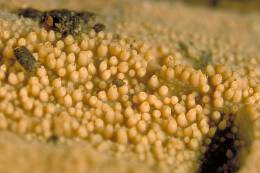

Biodiversity, NCRIS, Data, Australia, Collections, Species, Network
The Australian Microbial Resources Research Network (AMRRN) brings together the living microbial collections of the Australian Biological Resource Centres and is making their data available through the Atlas of Living Australia.
The Australian Microbial Resources Information Network (AMRIN, http://amrin.org/) is an initiative of AMRRN and provides electronic access to information on the location and characteristics of microbial cultures and associated research expertise in Australia.
